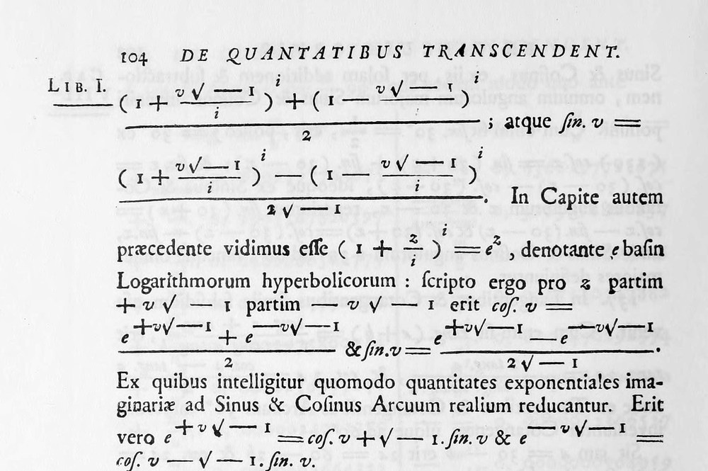
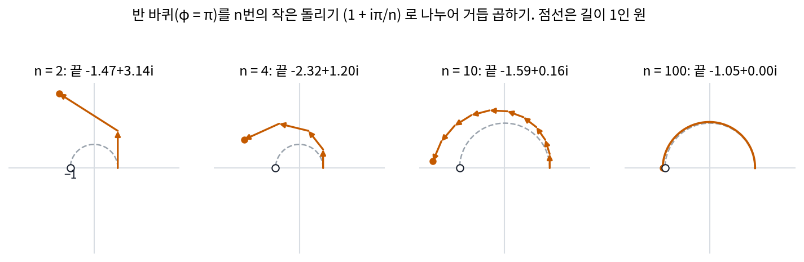
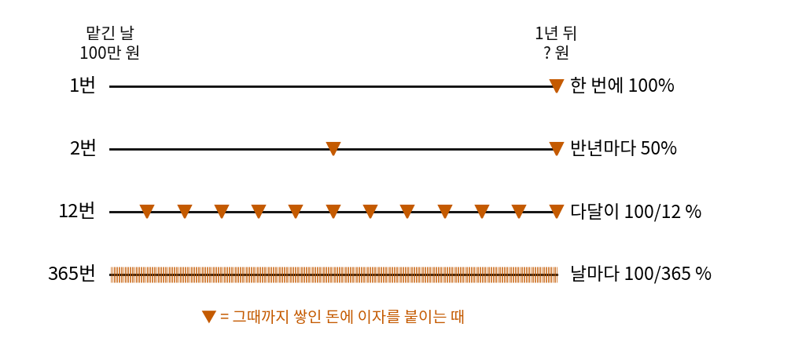
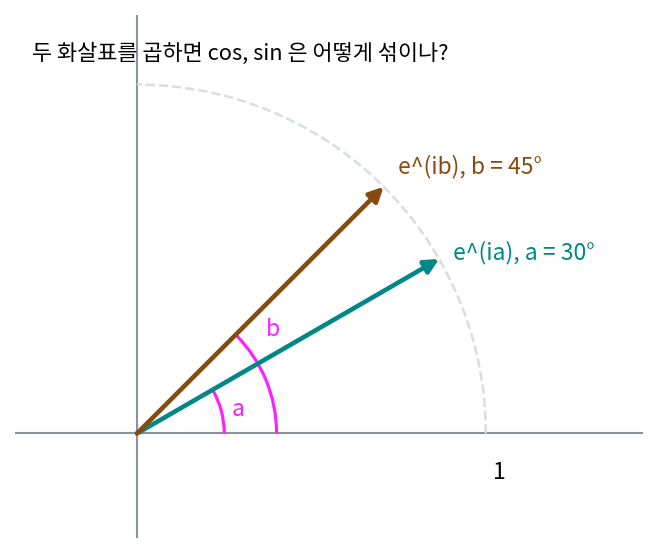
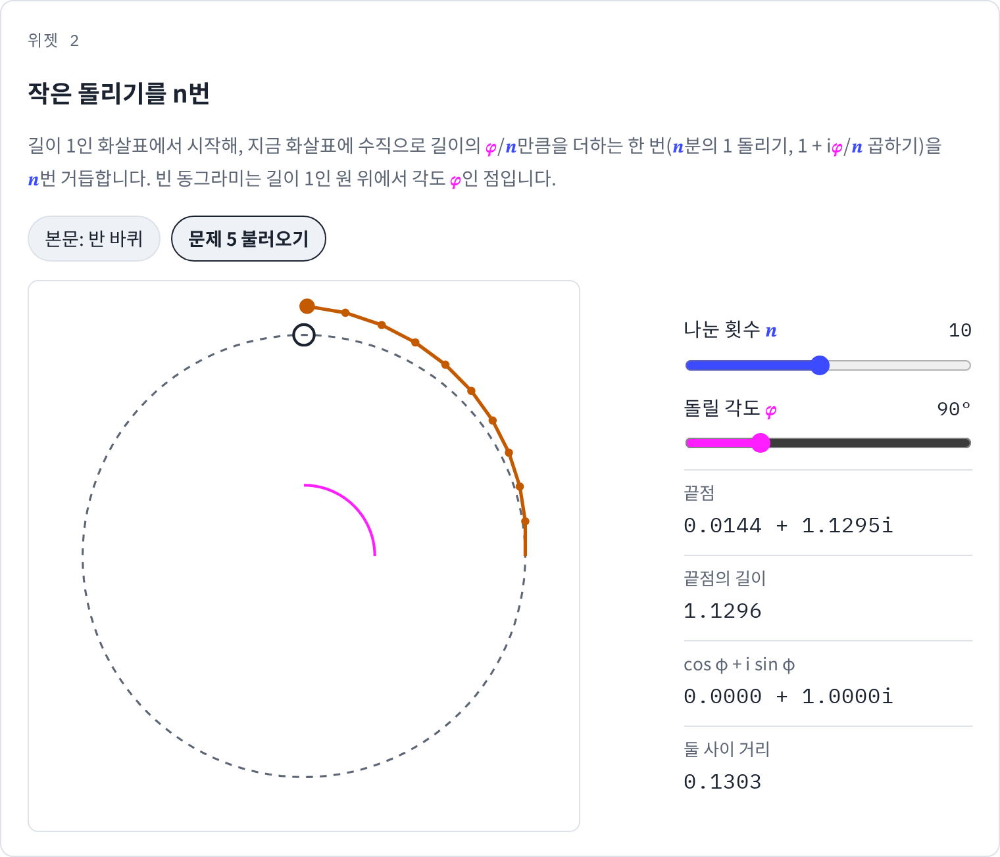
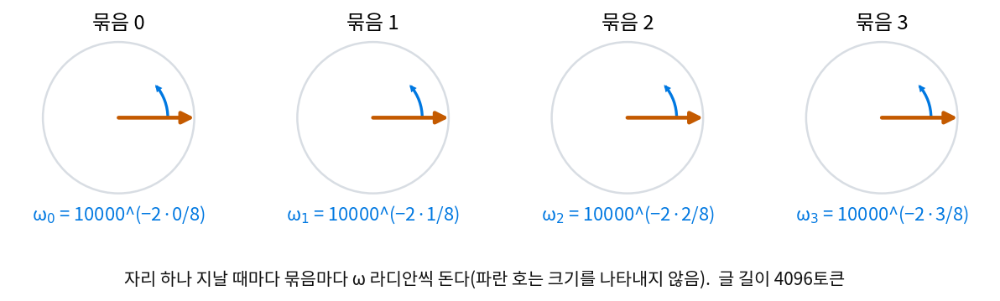

오일러 공식: 일정한 속도로 도는 화살표
길이 1인 복소수를 곱하면 화살표가 돈다는 것을 보았다. 이제 펜 끝을 시간에 따라 움직여 보자. 원 위를 일정한 속도로 도는 펜이라면 시각 t에 이른 각도는 t에 비례하고, 각도 φ(파이)를 돈 화살표는 cos φ + i sin φ였다. 그런데 이 화살표가 「곱하기」로 만들어졌다는 것을 떠올리면, 아주 작은 돌리기를 수없이 거듭 곱해서 이 화살표에 닿을 수 있을까 하는 물음이 생긴다. 닿는다면 작은 돌리기를 끝없이 거듭한 결과는 어떤 식으로 적힐까?
역사: 그림보다 먼저 나온 식
작은 돌리기를 거듭 곱한 끝을 적는 식은 화살표 그림보다 먼저 나왔다. 영국의 코츠(Roger Cotes)는 1714년 왕립학회지에 실은 『로그 측정』에서 원호의 길이와 로그 사이의 관계를 적었는데, 지금 말로 고치면 오일러 공식의 로그 꼴이다(i의 자리가 한쪽 어긋나 있었다). 오일러(Leonhard Euler)는 1748년 『무한 해석 입문』 1권에서 지금의 꼴을 적었다. 그는 아주 작은 호를 무한히 큰 수만큼 거듭하는 생각으로, 코사인 더하기 i × 사인을 지수 하나로 적는 식에 닿았다. 그때는 평면의 화살표 그림이 없었고, 베셀이 곱하기를 「방향각을 더하기」로 그린 것은 그로부터 50년쯤 뒤다. 오일러의 식이 먼저 맞았고, 오일러 공식이 왜 맞는지 눈으로 보여 주는 화살표 그림은 나중에 왔다. 허수 단위를 i라는 글자로 적는 것도 오일러가 시작했다. 1777년 학술원에 내고 1794년에 실린 글에서 「앞으로 √−1 을 글자 i 로 적겠다」고 밝혔다.


식이 그림보다 먼저 나왔다는 게 신기해요. 원 위의 점을 그려 놓으면 cos 와 sin 이 바로 보이는데요.

1748년의 오일러에게는 그 원이 없었어요. √−1 을 평면의 한 방향으로 놓는 그림은 베셀이 50년쯤 뒤에 그렸으니까요. 오일러가 붙잡은 것은 「아주 작은 호를 무한히 큰 수만큼 거듭한다」는 계산뿐이었어요.

그럼 코츠의 식에서 i 의 자리가 어긋나 있던 것도, 눈으로 볼 그림이 없어서 놓친 걸까요?

왜 어긋났는지는 기록으로 알 수 없어요. 다만 그림이 있으면 화살표가 원 위에 있는지 눈으로 바로 보이지만, 식만 있으면 다시 계산해 보는 수밖에 없어요. 글자 i 도 없어서 √−1 을 그대로 적었고요. 오일러가 i 로 적겠다고 밝힌 글은 1777년에 냈어요.

그림도 없고 i 라는 글자도 없이 거기까지 간 거네요. 우리는 둘 다 받아 들고 시작하고요.

그런데 「작은 호를 거듭한다」를 곱셈으로 하면 어떻게 돼요? 1 + 0.01i 같은 작은 돌리기를 백 번, 천 번 곱하면 화살표가 원 위에 남아요, 아니면 조금씩 바깥으로 밀려나요?
반 바퀴를 n번에 나눠 돌리기
1에 1 + 0.01i를 곱하면 1 + 0.01i가 되어, 화살표 끝이 지금 방향에 수직으로 0.01만큼 밀렸다. 각도로는 거의 0.01라디안(약 0.57°)을 돈 것이고, 길이는 √(1 + 0.01²) = 1.00005로 거의 늘지 않았다. 작은 수 a에 대해 1 + ia를 곱하는 일은 「거의 a라디안만큼 돌리기」다.
그러면 반 바퀴 φ = π(180°)를 n번에 나눠, 한 번에 1 + iπ/n씩 곱해 보자. n번 곱한 결과 (1 + iπ/n)ⁿ은 아래와 같다.
| 나눈 횟수 n | 끝점 | 길이 | 각도 | −1 까지의 거리 |
|---|---|---|---|---|
| 1 | 1.000 + 3.142i | 3.297 | 72.3° | 3.724 |
| 2 | −1.467 + 3.142i | 3.467 | 115.0° | 3.176 |
| 4 | −2.321 + 1.204i | 2.614 | 152.6° | 1.787 |
| 10 | −1.593 + 0.156i | 1.601 | 174.4° | 0.614 |
| 100 | −1.051 + 0.001i | 1.051 | 179.9° | 0.051 |
| 1000 | −1.005 + 0.000i | 1.005 | 180.0° | 0.005 |
한 번에 크게 돌리면 수직으로 밀린 만큼 길이가 늘어 원 밖으로 벗어난다. 잘게 나눌수록 한 번 곱할 때의 길이 배율 √(1 + (π/n)²)이 1에 가까워지고(n = 100이면 1.00049), 끝점은 반 바퀴 돈 자리 −1에 다가간다. n = 1000이면 −1과의 거리가 0.005다.

(1 + x/n)ⁿ에서 n을 끝없이 키운 값을 eˣ(e = 2.718…)로 적는다. 그러니 각도 φ를 잘게 나눠 돌린 끝은 eiφ로 적는 것이 자연스럽고, 그 자리는 길이 1인 원 위에서 각도가 φ인 점이다.
작은 돌리기를 끝없이 거듭한 극한과 원 위의 점을 잇는 등식 eiφ = cos φ + i sin φ 를 오일러 공식 (원 위의 점을 지수 하나로 / Euler’s formula)이라 한다. φ = π를 넣으면 eiπ = −1, 위 표의 끝점이 다가가던 값이다.
이제 시각 t에 따라 일정한 속도로 도는 화살표를 적을 수 있는데, 시각 t에 각도 kt만큼 돈 화살표다.
k = 1이면 시간 2π 동안 시계 반대 방향으로 한 바퀴, k = 2면 두 바퀴, k = −1이면 시계 방향으로 한 바퀴다. 이렇게 한 바퀴(시간 2π) 동안 화살표가 도는 횟수 k를 화살표의 주파수 (한 바퀴 동안 도는 횟수 / frequency)라 부른다. 물결이 정해진 시간 동안 몇 번 되풀이되는가를 나타내는 주파수와 같은 것이다. 곱셈 규칙 「각도는 더해진다」는 지수의 규칙 eia eib = ei(a+b)과 같은 말이 된다.
ML에서: 사인 위치 벡터의 성분 쌍은 도는 화살표다
트랜스포머를 처음 내놓은 논문(바스와니 외, 2017)은 자리 번호 m을 벡터로 펴서 토큰 벡터에 더했다. 펴는 법은 성분을 둘씩 묶어 한 묶음에 sin(mω)와 cos(mω)를 넣는 것이고, 묶음마다 주파수 ω(오메가, 자리 하나에 도는 각도)가 등비수열로 다르다. 한 묶음의 두 성분 (cos mω, sin mω)는 오일러 공식으로 보면 eimω의 실수 부분과 허수 부분이다. 시각 t 대신 자리 번호 m가, 주파수 k 대신 ω가 들어간 도는 화살표로, 자리가 한 칸 뒤로 갈 때마다 각도 ω씩 도는 화살표의 끝을 적어 넣은 것이다. 묶음마다 주파수가 왜 그렇게 다른지는 아래 문제 6에서 따진다.
문제 4. 연 100% 이자를 나눠 붙이기
은행이 연 이자 100%를 준다. 100만 원을 맡겼을 때, (가) 1년 뒤 한 번에 이자를 붙이면 얼마인가? (나) 반년마다 50%씩 두 번, 다달이 100/12 %씩 열두 번, 날마다 365번 나눠 붙이면 각각 얼마인가? (다) 나누는 횟수를 끝없이 늘리면 얼마에 다가가는가?

(가)는 200만 원이요. (나)는 나눠 붙이는 횟수만큼 이자가 쪼개지니까 결국 다 200만 원 아니에요?
반년마다 붙이면, 두 번째 반년의 이자는 얼마에 붙죠?
아, 첫 이자 50만 원이 붙은 150만 원에 50%가 붙으니까 225만 원이네요. 이자에도 이자가 붙어요.
그럼 다달이 붙이면요?
다달이면 (1 + 1/12)¹² = 2.613배라 261.3만 원, 날마다는 2.7146배요.
늘리는 폭이 점점 줄어드네. 시간마다 나누면 2.7181배고. (다)는 e = 2.7183배, 271.8만 원 근처로 모여.

반 바퀴를 n번에 나눠 돌리던 계산이랑 비교해 볼래요?

써 놓고 보니 둘 다 (1 + 작은 수/n)n 꼴이에요. 모양이 똑같네요.
그럼 둘은 어디가 다르죠?
작은 수요. 이자는 작은 수가 실수 1이라 화살표가 늘어나기만 하고, 돌리기는 작은 수가 iπ라 수직으로 밀려서 돌기만 해요.

그래서 하나는 e가 나오고 하나는 −1이 나온 거야?

응. 같은 극한이 한쪽에서는 e, 한쪽에서는 eiπ = −1이 된 거야.

장학금 이자를 복리로 준다는 공지를 보고 그게 왜 더 이득인지 몰랐는데, 이자에 이자가 붙는 거였어요.
문제 5. 덧셈 정리를 곱셈으로
(가) eiπ/2 와 e2πi 는 각각 어떤 수인가? (나) eia eib = ei(a+b) 의 양쪽을 cos 와 sin 으로 풀어, cos(a + b) 와 sin(a + b) 를 a, b 의 cos, sin 으로 적어라. a = 30°, b = 45° 로 숫자를 확인하라. (다) 각도 φ = π/2 를 n = 10, 100, 1000 번에 나눠 돌린 (1 + iφ/n)n 의 길이는 얼마인가? (위젯 2의 「문제 5 불러오기」로 확인해 보자.)

(가)는 90° 돈 것이라 i, 360° 돈 것이라 1이요.
(나)는 왼쪽을 곱하면 (cos a + i sin a)(cos b + i sin b) = cos a cos b − sin a sin b + i(sin a cos b + cos a sin b)야. 오른쪽은 cos(a + b) + i sin(a + b)니까 실수 부분끼리, 허수 부분끼리 같아야 해.

고등학교 때 외우던 덧셈 정리가 그냥 나왔어요. 숫자로 하면 0.866 × 0.707 − 0.5 × 0.707 = 0.2588이고 cos 75° = 0.2588, sin 쪽도 0.9659로 같아요.
(다)는요? 끝점이 i에 가까워지는 건 보이죠. 길이만 봐요.
10번이면 1.1296, 100번이면 1.0124, 1000번이면 1.0012요. 나눌수록 1로 가요.

그런데 1000번이어도 1보다 조금 커. 한 번 곱할 때 길이가 얼마나 늘지?
1 + iφ/n의 길이니까 √(1 + (φ/n)²)배지.
그럼 n번 곱하면 (1 + φ²/n²)n/2이야. 지수는 n/2로 커지는데 안의 φ²/n²은 n²으로 작아지네. 작아지는 쪽이 더 빠르니까 n이 커질수록 1로 가는 거구나.

그래요. 그래서 한 번에 크게 돌릴 때는 길이가 늘지만, 끝없이 잘게 나눈 극한에서는 길이 1인 원 위에 정확하게 머물러요. 곱셈 규칙과 지수 규칙이 같다는 것도 확인했고요.

덧셈 정리를 증명할 때 그림에 삼각형을 겹쳐 그리던 게 화살표 두 번 돌리기였어.

문제 6. 화살표 넷의 주파수
머리 하나의 성분이 8개인 모델이 사인 위치 벡터를 쓴다. 성분 8개는 묶음 넷이고, 묶음 j(j = 0, 1, 2, 3)는 자리 하나에 ωj = 10000−2j/8 라디안씩 돈다. (가) 묶음마다의 ω 와, 한 바퀴를 도는 데 드는 자리 수 2π/ω 를 구하라. (나) 글이 4096토큰일 때 묶음마다 몇 바퀴를 도는가? (다) 밑수 10000 을 100 으로 바꾸면 가장 느린 묶음은 어떻게 되는가? 밑수를 왜 크게 잡았는지 말하라.

(가)는 ω가 1, 0.1, 0.01, 0.001이고, 한 바퀴에 6.3, 62.8, 628.3, 6283.2자리요. (나)는 4096 × ω ÷ 2π니까 651.9, 65.2, 6.52, 0.65바퀴요. 빠른 묶음이 많이 도니까 정보도 제일 많겠네요.
가장 빠른 묶음만 보고 자리 3과 자리 3 + 6.3 × 100 근처를 가를 수 있어요?
한 바퀴가 6.3자리라 630자리 떨어지면 거의 같은 각도로 돌아와 있겠네요. 빠른 묶음은 바로 옆자리끼리는 잘 가르는데, 멀리 떨어진 자리는 못 가르겠어요.
그래서 느린 묶음이 필요한 거야. 가장 느린 묶음은 4096자리 동안 0.65바퀴만 돌아. 한 바퀴를 다 돌지 않으니까 글 안의 어느 두 자리도 이 묶음에서는 같은 각도가 되지 않아.
(다)는요?
밑수가 100이면 ω가 1, 0.316, 0.1, 0.0316이에요. 가장 느린 묶음도 198.7자리마다 한 바퀴네요.
4096토큰짜리 글이면요?
20.61바퀴요. 아, 그러면 199자리쯤 떨어진 두 자리를 가장 느린 묶음으로도 못 가르겠네요.
그럼 밑수를 크게 잡은 건 그걸 막으려고?
응. 밑수를 크게 잡으면 가장 느린 화살표가 글 하나를 다 지나도록 한 바퀴를 못 돌게 할 수 있어.

시계에 초침만 있으면 지금이 몇 시인지 모르고, 시침까지 있어야 하루 안에서 하나로 정해지는 거네요.